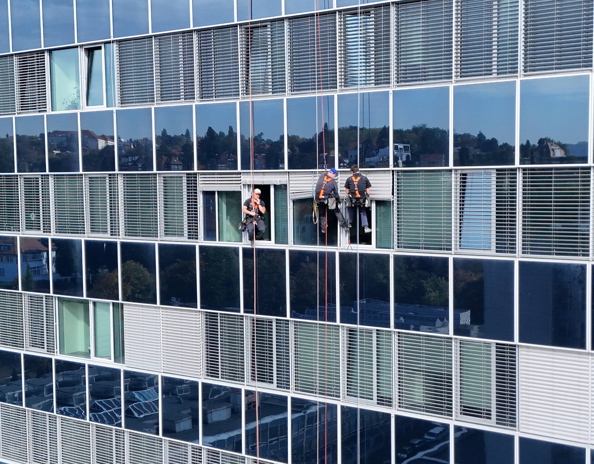
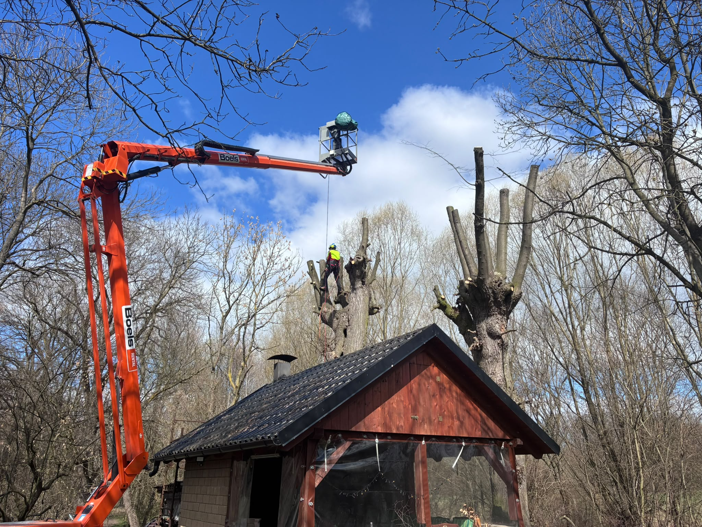

Lanová technika
Umožňuje práci na vysokých budovách, střechách a místech, kam se běžná technika dostává obtížně.

Práce na fasádách, střechách a dalších obtížně přístupných místech. Podle podmínek na místě volíme lanovou techniku nebo jiný vhodný způsob přístupu.
Poptat výškové práceKaždý objekt klade jiné nároky na přístup i provedení. Ve výšce řešíme údržbu, opravy a montáže s ohledem na podobu stavby a konkrétní zadání.
Umožňuje práci na vysokých budovách, střechách a místech, kam se běžná technika dostává obtížně.
Práce na fasádách, střechách a konstrukcích, jejichž stav vyžaduje zásah ve výšce.
Instalace prvků na objektech, včetně reklamních plachet a dalších montážních úkolů.
Postupné kácení a prořez stromů v místech, kde je potřeba chránit lidi, budovy a okolní majetek.

V Hradci Králové, Pardubicích a okolí provádíme postupné kácení vzrostlých stromů tam, kde hrozí poškození majetku nebo ohrožení lidí. Podle přístupu volíme práci z vysokozdvižné plošiny nebo arboristické lanové techniky. Pomáháme také po větru, námraze či těžkém sněhu.
Ukázky práce na budovách, konstrukcích i při rizikovém kácení stromů.
Pošlete místo, přibližný rozsah a termín. Společně upřesníme další postup.